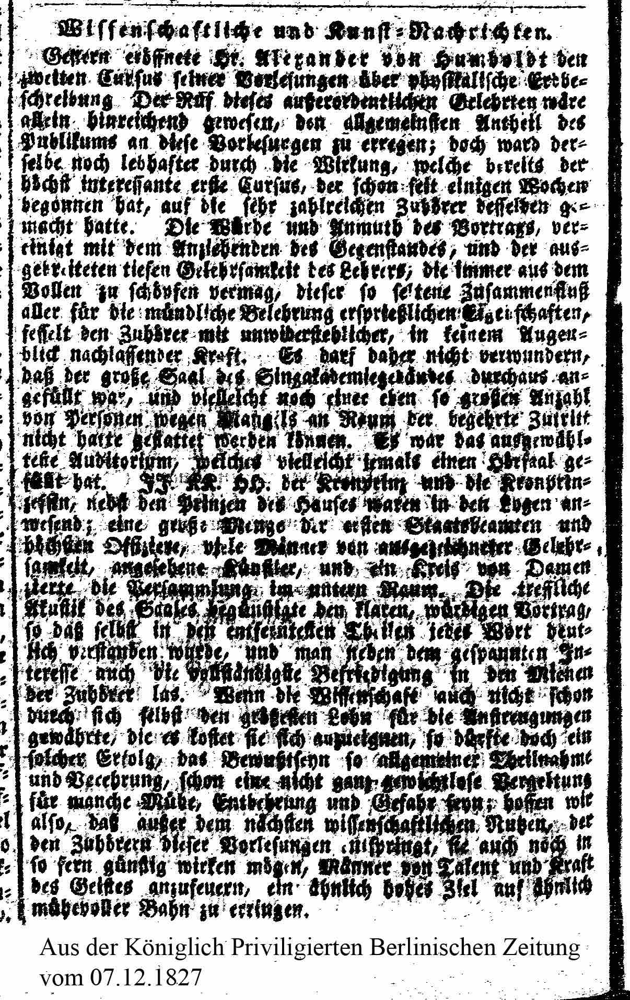

Ein Artikel aus der Koeniglich Privilegierten Berlineschen Zeitung
vom 7.12.1827

Wissenschaftliche und Kunst-Nachrichten
Gestern eröffnete Hr. Alexander von Humboldt den zweiten Cursus seiner Vorlesungen über physikalische Erdbeschreibung. Der Ruf dieses außerordentlichen Gelehrten wäre allein hinreichend gewesen, den allgemeinsten Antheil des Publikums an diese Vorlesungen zu erregen; doch ward derselbe noch lebhafter durch die Wirkung, welche bereits der höchst interessante erste Cursus, der schon seit einigen Wochen begonnen hat, auf die sehr zahlreichen Zuhörer desselben gemacht hatte. Die Würde und Anmuth des Vortrags, vereinigt mit dem Anziehenden des Gegenstandes, und der ausgebreiteten tiefen Gelehrsamkeit des Lehrer, die immer aus dem Vollen zu schöpfen vermag, dieser so seltene Zusammenschluß aller für die mündliche Belehrung ersprießlicher Eigenschaften, fesselt die Zuhörer mit unwiderstehlicher, in keinem Augenblick nachlassender Kraft. Es darf daher nicht verwundern, daß der große Saal des Singakademiegebäudes durchaus angefüllt war, und vielleicht noch einer eben so großen Anzahl von Personen wegen Mangels an Raum der begehrte Zutritt nicht hatte gestattet werden können. Er war das ausgewählteste Auditorium, welches vielleicht jemals einen Hörsaal gefüllt hat. II. KK. HH., der Kronprinz und die Kronprinzessin, nebst den Prinzen des Hauses waren in den Logen anwesend; eine große Menge der ersten Staatsbeamten und höchsten Offiziere, viele Männer von ausgezeichneter Gelehrsamkeit, angesehene Künstler, und ein Kreis von Damen zierte die Versammlung im unteren Raum. Die treffliche Akustik des Saales begünstigte den klaren, würdigen Vortrag, so daß selbst in den entferntesten Theilen jedes Wort deutlich verstanden wurde, und man neben dem gespannten Interesse auch die vollständige Befriedigung in den Mienen der Zuhörer las. Wenn die Wissenschaft auch nicht schon durch sich selbst den größesten Lohn für die Anstrengungen gewährte, die es kostet sie sich anzueignen, so dürfte doch ein solcher Erfolg, das Bewußtseyn so allgemeiner Theilnahme und Verehrung, schon eine nicht ganz gewichtslose Vergeltung für manche Mühe, Entbehrung und Gefahr seyn; hoffen wir also, dass außer dem nächsten wissenschaftlichen Nutzen, der den Zuhörern dieser Vorlesungen entspringt, sie auch noch in so fern günstig wirken mögen, Männer von Talent und Kraft des Geistes anzufeuern, ein ähnlich hohes Ziel auf ähnlich mühevoller Bahn zu erregen.
Artikel gefunden im Zeitungsabteilung der Staatsbibliothek zu Berlin Stiftung Preußischer Kulturbesitz